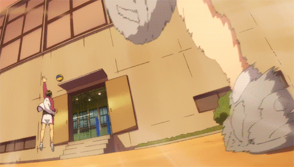

História
Conta a história do protagonista ruivinho pnc. Ele era criança e passou de bike na frente de uma lojinha e viu o mito "Pequeno Gigante" jogando volei e ficou de pau durasso, o maluco era baixinho e pulava que nem os cara de 2m e pouco e marcava ponto pra krai pro seu time "karasuno", dai o ruivin falou "slc volei e mt pika vou ser que nem esse mano Pequeno Gigante" e dai esse corno começa a treinar pra krai pra jogar volei no timinho lá do seu colégio que até o entanto só tinha ele, até que os parceiro dele q nem gostava de volei entra no timinho só pra ele n ficar triste e dar pra jogar, dai eles vai pro primeiro campeonatinho deles e são amassado pelo time do Kageyama que era o melhorzinho naquele tempo mas o Kageyama era o maior desumilde e ngm gostava dele, dps de serem amassados o ruivin fala que o Kageyama vai ser o rival dele e qnd eles vão pro Ensino Médio os dois se encontram na escola do Karasuno e começam a jogar no msm time.
